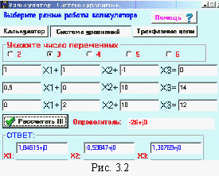
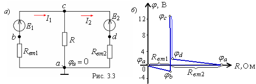

4. ПОТЕНЦИАЛЬНАЯ ДИАГРАММА КОНТУРА
Потенциальная диаграмма - это распределение потенциалов точек схемы в зависимости от сопротивлений элементов контура, т. е. φ = ƒ (R)
Для построения потенциальной диаграммы, например, для наружного контура (см. рис. 3.1), необходимо знать величину и направление токов ветвей и ЭДС источников.
Пусть E1 = 14 В; Rвт1 = 0,5 Ом; E2 = 12 В; Rвт2 = 2 Ом; R = 10 Ом.
Воспользовавшись калькулятором ElCalc, находим (согласно (3.1)) токи ветвей (рис. 3.2):
I1 » 1,85 А; I2 » - 0,54 А;
I » 1,31 А.

Заземлим точку а (рис. 3.3, a), т. е. примем ее потенциал φa = 0.
Тогда потенциал точки b φb = φa - Rвт1I1 = 0 - 0,5 • 1,85 = -0,925 В, т. к. ток I1 протекает от точки a к точке b; φc = φb + E1 = -0,925 + 14 = 13,075 В, т. к. потенциал точки с больше φb на 14 В (на диаграмме рис. 3.3, б скачок потенциала на 14 В за счет сторонних сил). Потенциал точки d: φd = φc - E2 = 13,075 - 12 = 1,075 В, а потенциал точки а: φa = φd - Rвт2I2 = 1,075 - 2 • 0,54 » 0 В.
Возвращение в исходную точку а с нулевым потенциалом после расчета потенциалов всех точек вдоль выбранного контура подтверждает правильность расчета цепи.
